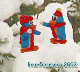
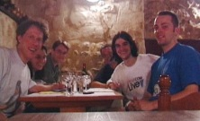
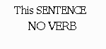
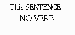

Bienvenidos al número de Enero de 2002 de LinuxFocus |
 Esta editorial se escribio en una fría tarde invernal. Hay un monton de nieve ahí fuera. Es momento de mirar atrás y meditar sobre Linux. Linux Weekly News ha publicado nuevamente una interesante cronología (lwn.net/2001/features/Timeline). En general, 2001 ha sido un año en que el mercado bursátil ha caído, y obviamente eso ha tenido cierto impacto sobre Linux. A pesar de ello, las compañías tradicionales de Linux están aún en pie, y hay un buen número de proyectos cuya financiación no es estrictamente comercial. Linux podrá por tanto continuarse expandiendo.
|  |
|
En un restaurante de Burdeos, Julio 2001. De izquierda a derecha: Guido y Katja Socher (linuxfocus), John Reuning (ibiblio), John Perr (linuxfocus), Guylhem Aznar (linuxdoc), Egon Willighagen (linuxfocus). |
Sobre todo podemos estar muy satisfechos de los resultados de las actividades en marcha de LinuxFocus y Linux. Aunque seguimos teniendo los problemas diarios, el conocimiento público de Linux está realmente creciendo y su futuro parece ciertamente interesante. Linux is really growing and its future will certainly be exciting.
¡Feliz año nuevo!
 Ejecutando aplicaciones remotas con X11
, por Guido Socher
Chroot de todos los servicios en Linux
, por Mark Nielsen
Revisión de libros: "Linux System Administration - A User's Guide"
, por Egon Willighagen
MySQL y Perl, el matrimonio por conveniencia
, por Georges Tarbouriech
Grabando CDs con Linux
, por Katja and Guido Socher
QCAD: Dibujo técnico con Linux
, por André Pascual
Desarrollando aplicaciones GNOME con Python (segunda parte)
, por Hilaire Fernandes
Ejecutando aplicaciones remotas con X11
, por Guido Socher
Chroot de todos los servicios en Linux
, por Mark Nielsen
Revisión de libros: "Linux System Administration - A User's Guide"
, por Egon Willighagen
MySQL y Perl, el matrimonio por conveniencia
, por Georges Tarbouriech
Grabando CDs con Linux
, por Katja and Guido Socher
QCAD: Dibujo técnico con Linux
, por André Pascual
Desarrollando aplicaciones GNOME con Python (segunda parte)
, por Hilaire Fernandes
¿Cómo hacer las imágenes más pequeñas? Nuestra experiencia habitual es que siempre podemos hacer una imágen menor sin perder calidad. Sin embargo, esto es una creencia basada en el "mundo analógico". La reducción de una imagen digital se lleva a cabo eliminando píxeles. Si reduces una imagen de 600 a 300 píxeles de ancho, lo que harás será eliminar los píxeles pares.
|

Fig. 1: imagen original |
|

Fig. 2: imagen reducida |
|
Fig. 3: desenfocada + reducida |
|
© 2002 LinuxFocus Página de contacto con LinuxFocus |